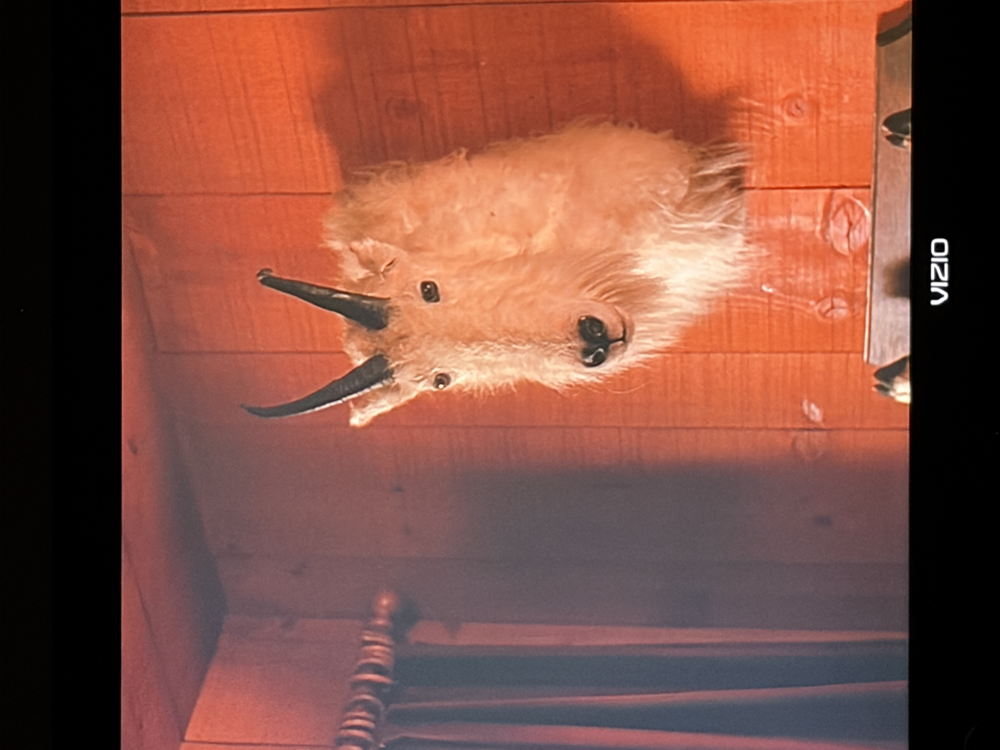
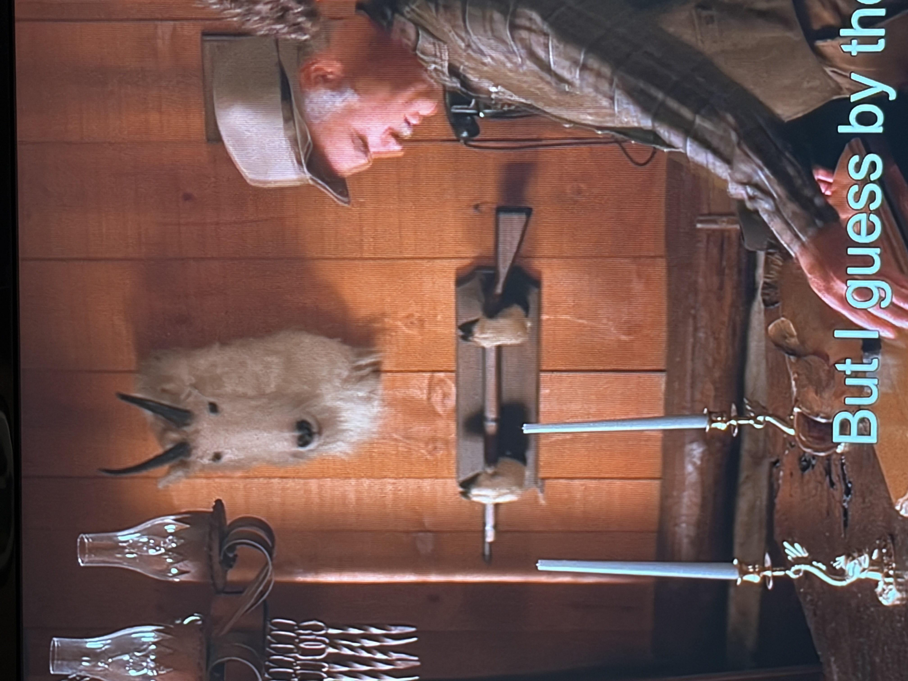

Been rewatching Twin Peaks s1 (on Blu-Ray, w/ special features #twinpeaksfromztoaboxset). Unbelievably good show, of which I’ve never seen season 2, Fire Walk With Me, or The Return. But I will, this time around! Anyways, uh.


Why the fuck is this mountain goat stuffed on the wall like this, it’s so fucking scary and so distracting
Mountain goat heads cannot possibly be that long in real life. I go on google images and they are not that long in real life. And the eyes are so dead 😭 like obviously because they’re fake but still. Genuinely the scariest part of the show. I hope it doesn’t show up again in s2 or I’m finished!